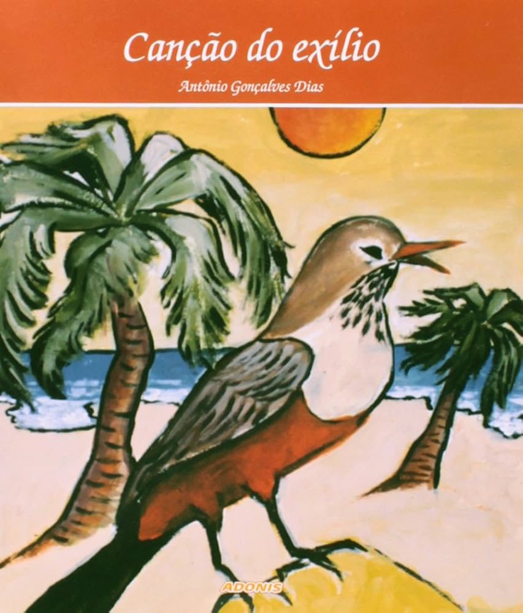

Canção do Exílio

"Canção do Exílio", de Antônio Gonçalves Dias, escrita em 1843, é um poema que expressa a saudade e a nostalgia de um poeta exilado que sente a falta de sua terra natal, o Brasil. A obra idealiza a natureza brasileira, exaltando suas belezas, como o verde das florestas e o canto do sabiá, em contraste com a dureza do exílio. O poema reflete o sentimento romântico de ligação profunda com a pátria e ajuda a consolidar uma imagem idealizada do Brasil, destacando suas riquezas naturais como símbolos de sua identidade nacional. A obra é um marco da exaltação da cultura brasileira, típica do romantismo.